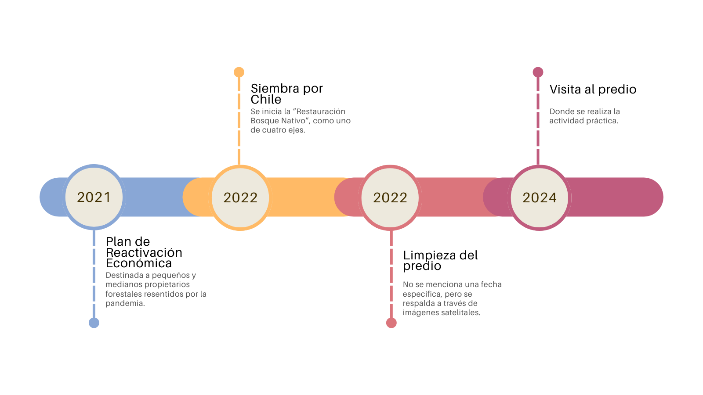

Acción (fallida) de restauración CEFOR
Carácteristicas Generales
Lugar: Arboretum, Valdivia.
Fecha: 20 de Agosto de 2024
Resumen
Se fue a visitar una acción de restauración realizada por el Centro Experimental Forestal (CEFOR), apoyada por la Corporación Nacional Forestal (CONAF) y comandada por Giorgio Jackson (de CONAF) Pamela Acevedo y Rony Reyes.
Descripción de Actividad
Se fue visitar presencialmente el fundo del CEFOR dentro del Arboretum. Dentro de este se realizó una fallida acción de restauración, un recambio de especies vegetales, pasando principalmente de aromo (Acacia melanoxylon) a tres especies nativas Coihue (Nothofagus dombeyi), Roble (Nothofagus obliqua) y en menor medida Ulmo (Eucryphia cordifolia), en aproximadamente en 3 hectáreas. Esto se enmarca dentro de los planes de reactivación económica (2021) y posteriormente en Siembra por Chile (2022) (Figura 1). Estos planes tenían como principal foco la reactivación económica rural. A grandes rasgos, CONAF proporciona recursos (tales como dinero, empleos, materiales) para incentivar a los propiertarios a cambiar especies vegetales exóticas (principalmente aromo y eucalipto) a especies nativas. Con esto se ayuda al sector rural para volverlos activos económicamente a la vez que se cumple con los compromisos internacionales adquiridos por Chile para hacer frente al cambio climático (reforestando bosque nativo). Este plan nace desde el Ministerio de Agricultura, que tiene como principal objetivo la reactivación económica, impulsar la agricultura familiar y reforzar la seguridad alimentaria. Dentro de este, un objetivo es la Restauración de Bosque Nativo, junto con la Reactivación de Empleo 1.

En general, CONAF llega a un mutuo acuerdo entre empresa-propietario para realizar la reconversión de especies.
Sin embargo, esto va atado a ciertos problemas:
Poco compromiso local: Para que estas acciones lleguen a ser planes de restauración se debe mantener el bosque nativo plantado durante el tiempo, por lo que, si al propietario no le interesa seguir con el plan, CONAF se retirará y lo invertido se perderá.
Desinformación: Giorgio nos comentaba que algunos propietarios pensaban que a través de este plan, CONAF expropiaba terrenos privados. Nada más lejos de la realidad, ya que la Corporación se limitaba a incentivar la plantaciones de especies nativas y entrega de recursos.
Desinterés o desconocimiento: Se comentó tambien que varios propietarios no le interesaba realizar la reconversión por muchos motivos. Uno de estos era mantener bosques forestales productivos para la descendencia del propietario. De hecho, algunas personas encontraban que especies que pueden fomentar la sucesión ecológica, como el maqui (Aristotelia chilensis) o el radal (Lomatia hirsuta) eran consideradas especies de poco valor (económico).
Teniendo esto en cuenta, CONAF, junto con CEFOR, realizaron una acción de conservación dentro del Arboretum. Este consistia en la cortar aromo (Acacia melanoxylon) y reemplazarlo por especies nativas (Coihue, Roble y Ulmo). No se menciona a detalle el periodo de corta ni la forma de ejecución de esta pero se presume que el plan se ejecutó durante el año 2022 a través de corta mecánica y quema (Figura 3, Figura 4 y Figura 2). Se hicieron dos métodos de siembra, por núcleo e hileras, como se muestra en la Figura 2.
Lamentablemente, CEFOR no realizó ninguna acción posterior a la corta para mantener a raya al aromo. Esto sumando al agresivo rebrote propia de la especie provocó que el predio se llenara de individuos de esta especie en relativamente poco tiempo (uno a dos años). Es por esto que se hace énfasis en el compromiso local.
Resultados y Comentarios
Inicialmente se nos entregó un mapa georreferenciado del predio formato .pdf. Este, junto con los núcleos visitados se encuentran a continuación:
Respecto a la corta efectuada se pudo ver, gracias a Google Earth que esta fue efectuada durante 2022 y que, debido al rebrote de aromo, rápidamente se vuelve a tener una cobertura vegetal. Aquí hay un pequeño timelapse:
Esto se puede evidenciar con valores promedio de NDVI y SAVI para el fundo. Se puede ver, iniciando 2022, los valores de ambos índices bajan bajan, comenzando a estabilizarse a inicios del 2024, como se observa en la Figura 4.
Se ocupó el NDVI ya que puede detectar la vitalidad de las plantas. Al haber corta, no hay plantas y por ende no habría vitalidad. Sin embargo, debido al efecto que podría tener el suelo descubierto se empleó el SAVI, ya que su ajuste al efecto del suelo lo hace más confiable en estas condiciones. Se pudó observar tambien, un comportamiento cíclico dentro del SAVI, al cual atribuyo al comportamiento estacional de A. melanoxylon, remarcado a principios del 2024.
En los núcleos 8 y 10 (Figura 2) se constató la dominancia del aromo, favorecida por su rebrote a partir de tocones. En contraste, se observó que los ejemplares de N. obliqua presentaban un estado lamentable, con muchos individuos secos, suprimidos o caídos en el suelo. La explicación más plausible es que las especies nativas no lograron competir por los recursos frente al aromo. Un posible indicio de ello fue el gran desarrollo del sistema radical, expuesto por la remoción mecánica de uno de sus individuos:

Por otro lado, a través de las observaciones de terreno, debido a la presencia de tocones se evidencia que la principal forma de limpieza del sector fue a través de corta, posiblemente corta con motosierra. Sin embargo, en el núcleo 13 (Figura 2) se encontraron troncos con restos carbonizados, lo que podría sugerir que también se ocupó quema para la limpieza. Más adelante, en las clases teóricas, aprenderíamos que este método, aunque puede parecer riesgoso, puede ser útil con fines de restauración. No obstante, esto no se mencionó en ningún momento y puede que pertenezca a alguna quema anterior.

En el predio se observaron numerosos rebrotes de aromo, especialmente en tocones, lo que evidencia el escaso compromiso de CEFOR con esta acción de conservación. Además, se nos informó que ganado bovino ingresaba al predio (lo que se pudo constatar por la presencia de fecas, tanto secas como frescas), y posiblemente estos animales consumieron individuos de especies nativas. Esto, sumado al rebrote de aromo, demuestra que no es suficiente realizar una acción puntual en un sector, ya sea una corta o plantación. Sin un seguimiento y monitoreo adecuado, la restauración no será efectiva. En este contexto, el compromiso público-civil es fundamental. Como se nos explicó en clase, contar con el apoyo de las comunidades locales es imperativo para lograr el éxito en estos esfuerzos.
Foto del día